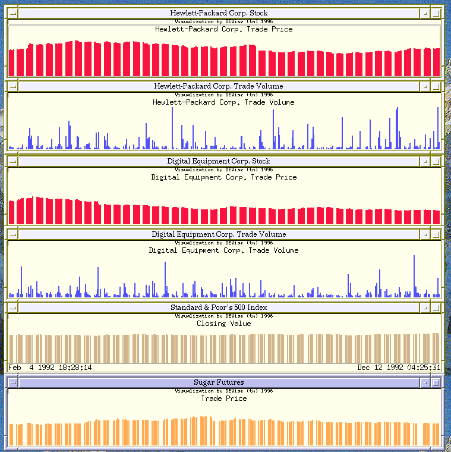

Financial Data Exploration Example

Input Data
The input data:
- consists of four separate data sources: Hewlett-Packard stock information,
Digital Equipment Corp. stock information, Standard & Poor's closing value,
and sugar futures trade price.
- the Hewlett-Packard data, for example, contains the following attributes:
day, month, year, hour, minute, second, trade exchange, price, volume, and
trade condition.
The Hewlett-Packard input data looks like:
2,1,1992,9,32,29,M,56.125,1,@
2,1,1992,9,32,30,X,56.125,1,@
...
Problem
Visualize data from a number of different sources, to allow the user to
easily look for correlations.
Visualization
Click here to see our model of creating
visualizations.
The visualization is created as follows:
- Define the 'HP Trade Price' window with the date mapped to the X axis
and the trade price mapped to the Y axis.
- Define the 'HP Trade Volume' window with the date mapped to the X axis
and the trade volume mapped to the Y axis.
- Define the 'DEC Trade Price' and 'DEC Trade Volume' windows similarly.
- Define the 'S&P Index' window with date mapped to the X axis and closing
value mapped to the Y axis.
- Define the 'Sugar Futures' window with date mapped to the X axis and
closing price mapped to the Y axis.
- Link the X axes of all of the windows so that they will all display the
same range of dates.
Observations
This application illustrates DEVise's ability to access
data from a variety of formats, without requiring users to store
all data in a common repository, and its use in integrating information
from many sources---users can now look for correlations and trends
using the combined information from a variety of vendors.